How do we think of the future? What do we wish to happen? Sci-fi novels may be the best places to find out the reason why the future is so fascinating.
The words here are picked from the Sci-fi novels in Chinese based on their frequency.
For example, the size of each word as it is shown here in the word cloud. These novels were a selection of
award-winning works for Chinese Sci-fi galaxy award from 1986 to 2011 (中国科幻银河奖第一届至第二十三届).

1: Wordcloud generated from the data.
Drag >> Move these words
Scroll >> Scale up or down these words
Click >> Check detail information of this word in graph 3 & 4
2: General information of all the words. Sorry the filters don't work currently.
3,4: Detail information of the word clicked.
List of novels 收集科幻作品以下191篇：
1986
《白痴》《失踪的航线》
1989
《难圆玫瑰梦》《天道》《在时间的铅幕后面》
1991
《故土难离》《火山口上的大脑基地》《女娲恋》《生死第六天》《太空修道院》《雾中山传奇》《一个戊戌老人的故事》《证据》
1992
《波儿》《等您一千年》《光恋》《梦幻世界》《行星巴士》《遗物钓“鲨”》《坠入爱河的电脑》
1993
《戴茜救我》《电脑魔王》《无际禅师之谜》《雪陆星》《亚当回归》
1994
《朝圣》《空中袭击者》《魔瓶》《平行》《丘比特的谬误》《圣诞礼物》《失去记忆的人》《天火》《智慧病毒》《撞击》
1995
《沧桑》《超脑》《寂寞长天》《泪洒鄱阳湖》《没有答案的航程》《生命之歌》《太空抢险》《信使》《幽灵列车》《远古的星辰》
1996
《伏羲》《火星尘暴》《决斗在网络》《克隆之城》《梦境》《全息传真机》《网络帝国》《为了凋谢的花》《我要活下去》《西奈噩梦》
1997
《毒蛇》《黑洞之吻》《红舞鞋》《桦树的眼睛》《猫捉老鼠的游戏》《七重外壳》《谁胜谁负》《谁是亚当》《天骄》《一个老流浪汉的自述》
1998
《MUD—黑客事件》《豹》《飞越海峡的鸽子》《风之子》《高塔下的小镇》《会合第十行星》《猫的故事》《时间的彼方》《偃师传说》《这一刻用尽一生》
1999
《超越永恒》《潮啸如枪》《带上她的眼睛》《黑暗中归来》《来自远古》《笑吧，朋友》《心歌魅影》《心灵密约》《伊俄卡斯达》《异域》
2000
《爱别离》《橱窗里的荷兰赌徒》《流浪地球》《日落了，却没人写诗》《三十六亿分之一》《深渊：十万年后我们的真实生活》《我想回桂林》《一线天》《异手》《邮差》
2001
《大角，快跑》《盗墓》《废墟》《故乡的云》《诡础》《来看天堂》《棋谱》《全频带阻塞干扰》《是谁长眠在此》《替天行道》《蜕》《乡村教师》《心中的香格里拉》《熏衣草》《战神初航》
2002
《宝贝宝贝我爱你》《朝闻道》《饥不择食》《六道众生》《马姨》《日光镇》《生存实验》《水星播种》《天下之水》《吞食者》《瘟疫》《西天》《一日囚》《植花演义》《中国太阳》
2003
《春日泽·云梦山·仲昆》《地球大炮》《饿塔》《寄生之魔》《山海间》《伤心者》《诗云》《思想者》《唯美》
2004
《冰上海》《关妖精的瓶子》《镜子》《潜入贵阳》《审判日》《天意》《异天行》《圆圆的肥皂泡》
2005
《寂静之城》《卡门》《情尽桥》《赡养人类》《深度撞击》《天生我材》《天堂没有地下铁》《一生的故事》
2006
《废楼十三层》《归者无路》《昆仑》《囚魂曲》《上校的军刀》《我是谁》《终极爆炸》
2007
《674号公路》《后冰川时代纪事》《假设》《泡泡》《天雷无妄》《永不消失的电波》《在他乡》《祖母家的夏天》
2008
《虫巢》《袋鼠》《扶桑之伤》《活着》《基因源》《湿婆之舞》《永夏之梦》
2009
《抽签佯谬》《达尔文的夜莺》《绿岸山庄》《十亿年后的来客》《时空追缉》《胎动之星》《屠龙之技》《有关时空旅行的马龙定律》
2010
《百鬼夜行街》《百年守望》《笼中乌鸦》《人生不相见》《双生忆》《伪人算法》《昔日玫瑰》
2011
《第九站的诗人》《雷峰塔》《您好，异星人陪聊》《杀死一个科幻作家》